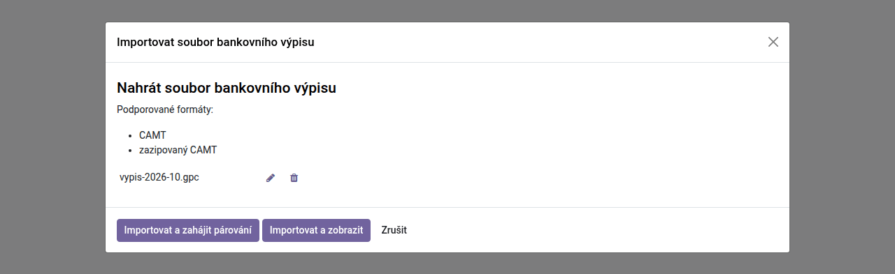
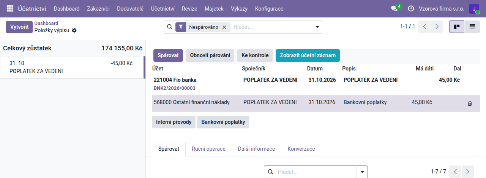

Návod k úloze
Bankovní účty
Bankovní účet v Odoo, import výpisu GPC nebo CAMT, párování podle variabilního symbolu, bankovní poplatky a platební příkazy ABO dodavatelům — a co který krok zaúčtuje.
| Země | Česko |
|---|---|
| Edice | Odoo Community |
| Zahrnuje | account, account_statement_import_base, account_statement_import_file, account_statement_import_gpc, account_statement_import_camt, account_statement_import_camt_balance, account_reconcile_oca, account_reconcile_oca_counter_account, l10n_cssk_payment_symbols, l10n_cssk_payment_symbols_oca, account_payment_order, account_payment_mode, l10n_cssk_payment_symbols_payment_order, account_abo, account_banking_sepa_credit_transfer, l10n_cssk_payment_symbols_sepa_oca, account_fio, account_statement_fio |
K čemu tento návod slouží
V Odoo přicházejí platby z bankovního výpisu: faktura je zaplacená, když se její otevřená položka spáruje s řádkem výpisu. Tento návod prochází celý koloběh — od založení bankovního účtu přes import výpisu a párování po platební příkaz dodavatelům — a co který krok zaúčtuje.
Pojmy a menu vysvětluje Odoo pro českého účetního, účty bankovního deníku Nastavení předkontací.
Bankovní účet
Každý bankovní účet je v Odoo bankovní deník s vlastní analytikou účtu
221. Založíte ho v Účetnictví → Konfigurace → Účetnictví → Účetní deníky →
Nové: Typ Banka, název (například Fio banka) a na kartě Účetní
záznamy Číslo bankovního účtu — jako IBAN nebo v českém tvaru
předčíslí-číslo/kód banky. Odoo založí účet 221 pojmenovaný podle deníku
(například 221004 Fio banka) a nastaví Přechodný účet na 261000 Peníze na
cestě.
Na přehledu (Dashboard) aplikace Účetnictví má každý bankovní deník kartu se zůstatkem, počtem nespárovaných řádků a tlačítky pro import a párování.
Import výpisu
České banky umožňují stáhnout výpis z internetového bankovnictví ve formátu GPC (nabízeném také jako ABO) a řada z nich i jako CAMT.053 (XML). Stáhněte ho za období, které v Odoo ještě není, a poté:
- na kartě banky na přehledu klikněte na Import výpisu, nebo použijte Účetnictví → Účetnictví → Importovat výpis;
- Nahrajte soubor a zvolte Importovat a zobrazit.
Odoo vybere bankovní deník podle čísla účtu ve výpisu, převezme počáteční
a konečný zůstatek a pro každý pohyb vytvoří řádek. Soubor GPC za více dnů
vytvoří jeden výpis za každý den, pojmenovaný GPC <účet>/<číslo>.

Opakovaný import téhož souboru GPC je bezpečný: již importované řádky se
přeskočí, takže soubor, který se překrývá s dřívějším, přinese jen nové
pohyby (account_statement_import_gpc).
Stejný výpis CAMT neimportujte dvakrát — import CAMT duplicitu nepozná
a vytvoří druhý výpis se stejnými pohyby; omylem importovaný výpis smažte
dříve, než se jeho řádky spárují.
Okno importu uvádí v Podporovaných formátech jen CAMT; soubory GPC přesto přijme.
Nemá-li karta banky tlačítko pro import (deník existoval dříve, než byl import nainstalován), nastavte v deníku pole Bankovní napojení na Import výpisu.
Při importu se z každého řádku přečtou platební symboly — VS, KS, SS —
a zapíší se do popisu řádku (VS:202600001 KS:0308) spolu s číslem účtu
protistrany. Partner se doplní podle tohoto čísla účtu, pokud ho máte u
některého partnera uvedeno:
l10n_cssk_payment_symbols.
Odmítne-li import výpis CAMT s tím, že „nesouhlasí zůstatek“, přestože je
soubor správný (některé banky uvádějí denní mezizůstatky nebo zůstatek
v jiné podobě), nainstalujte z Aplikací opravu
account_statement_import_camt_balance.
Další způsoby, jak výpis dostat do Odoo:
- Fio banka — výpisy se stahují automaticky přes Fio API: Fio banka.
- Automatické bankovní výpisy — pohyby na účtech v českých a slovenských bankách stahované přes Premium API Tatra banky: Automatické bankovní výpisy.
- Ručně — Účetnictví → Účetnictví → Banka a hotovost → Bankovní výpisy → Nové.
Automatické párování
Už při importu se řádky výpisu párují s otevřenými fakturami podle variabilního symbolu:
- symbol nese právě jedna otevřená faktura → spáruje se;
- nese ho více faktur → vezme se ta, jejíž otevřená částka se rovná platbě, je-li taková právě jedna;
- je-li znám plátce (podle čísla účtu), berou se v úvahu jen jeho doklady;
- úvodní nuly se ignorují (
0042=42).
Částečná úhrada se spáruje a zbytek faktury zůstane otevřený. Přeplatek se
automaticky nepáruje nikdy — zůstává na vás. Modul nikdy nehádá: co není
jednoznačné, nechá na ruční párování
(l10n_cssk_payment_symbols_oca).
Zaúčtování spárovaných řádků:
| Řádek výpisu | Účet | MD | D |
|---|---|---|---|
| Platba od zákazníka, 48 400 Kč | 221004 Fio banka | 48 400 | |
| 311000 Odběratelé | 48 400 | ||
| Platba dodavateli, 24 200 Kč | 321000 Dodavatelé | 24 200 | |
| 221004 Fio banka | 24 200 |
Ruční párování
Co se nespárovalo automaticky, najdete pod tlačítkem … ke spárování na kartě banky nebo v Účetnictví → Účetnictví → Spárovat. Vlevo jsou nespárované řádky výpisu, vpravo navržený zápis a pod ním na kartě Spárovat otevřené položky zákazníků a dodavatelů.

- Úhrada faktury: klikněte na fakturu v seznamu otevřených položek (hledejte podle partnera, částky nebo čísla), zkontrolujte navržené řádky a klikněte na Spárovat.
- Bankovní poplatek, úrok, převod mezi vlastními účty: tlačítka Bankovní poplatky a Interní převody nad kartami doplní protiúčet jedním kliknutím.
- Cokoli jiného: karta Ruční operace — účet, partner, popis a částka zadané ručně.
- Ke kontrole odloží řádek, u kterého si nejste jisti; Obnovit párování vrátí spárovaný řádek zpět.
U platby bez symbolu pomůže číslo účtu plátce, které obrazovka párování
ukazuje u řádku výpisu
(account_reconcile_oca_counter_account).
Uveďte toto číslo účtu u partnera a Odoo ho příště pozná.
Tlačítko Bankovní poplatky účtuje poplatek na účet nastavený v Účetnictví → Konfigurace → Účetnictví → Modely párování plateb → Bankovní poplatky. U české osnovy ho Odoo nastaví chybně na 501000 Spotřeba materiálu; změňte ho na 568000 Ostatní finanční náklady. Zkontrolujte také, že model Interní převody míří na 261001 Převod peněžních prostředků.
| Řádek výpisu | Účet | MD | D |
|---|---|---|---|
| Poplatek za vedení účtu, 45 Kč | 568000 Ostatní finanční náklady | 45 | |
| 221004 Fio banka | 45 |
Dokud řádek není spárován, je zaúčtován proti účtu 261000 Peníze na cestě. Zůstatek účtu 261000 je tedy součet nespárovaných pohybů — na konci měsíce má být nulový.
Platební příkaz dodavatelům
Úhrady přijatých faktur se v Odoo připravují hromadně a do banky se nahrají jako jeden soubor. Pro tuzemské platby v Kč je to ABO, hromadný příkaz k úhradě, který přijímá každá česká banka:
- Jednou: uživatelé, kteří platby připravují, potřebují skupinu Účetnictví / Platby, kterou role Hlavní účetní neobsahuje. Administrátor je do ní přidá ve vývojářském režimu v Nastavení → Uživatelé a společnosti → Přístupové skupiny. V Účetnictví → Konfigurace → Účetnictví → Způsoby platby založte způsob platby, například Příkaz ABO: Platební metoda ABO (Czech credit transfer), Vazba na bankovní účet Pevná, Pevný bankovní deník váš bankovní deník. Každý dodavatel, kterému platíte, potřebuje na kontaktu bankovní účet.
- Účetnictví → Dodavatelé → Platební příkazy → Nové, zvolte Způsob platby a Typ data provedení platby nastavte na Ihned nebo Pevné datum: soubor ABO má jedno datum splatnosti pro všechny platby, takže výchozí Datum splatnosti je odmítnuto, jakmile mají faktury různou splatnost.
- Vytvořit platební řádky z účetních položek → Přidat všechny účetní položky (nebo jen vybrané) → Vytvořit transakce. Přidat všechny účetní položky nabídne faktury se stejným způsobem platby, jaký má příkaz: nastavte dodavatelům Způsob platby dodavatele, nebo v tomto okně přepněte Způsob platby na Jakýkoliv. Každý řádek dostane účet dodavatele, částku a VS, KS a SS faktury.
- Potvrdit platby a Generovat platební soubor. Soubor
.abostáhněte a nahrajte do internetového bankovnictví, kde příkaz autorizujete. - Klikněte na Soubor byl úspěšně nahrán. Faktury přejdou do stavu V platbě.
Co soubor obsahuje a co odmítne (jiné měny, zahraniční účty), popisuje
account_abo. U Fio banky lze soubor odeslat do
banky i přímo z Odoo:
account_payment_fio.
Platby v EUR odcházejí jako soubor SEPA (pain.001): nainstalujte z
Aplikací modul Account Banking SEPA Credit Transfer a založte způsob
platby s metodou Úhrada SEPA dodavatelům.
l10n_cssk_payment_symbols_sepa_oca
pak do souboru zapíše VS, KS a SS faktury.
Zaúčtování. Po potvrzení nahrání zaúčtuje každá platba:
| Doklad | Účet | MD | D |
|---|---|---|---|
| Platba (Soubor byl úspěšně nahrán) | 321000 Dodavatelé | 968 | |
| 221003 Čekající odchozí platby | 968 | ||
| Řádek výpisu (spárovaný s platbou) | 221003 Čekající odchozí platby | 968 | |
| 221004 Fio banka | 968 |
Když se platba objeví na výpisu, řádek výpisu se automaticky nespáruje — faktura je už vyrovnána platbou, která čeká na spárování s bankou. Ve Spárovat ji spárujte s položkou platby na účtu 221003 (najdete ji v seznamu podle dodavatele nebo částky). Zůstatek účtu 221003 jsou platby odeslané do banky, které ještě nejsou spárovány s výpisem.
Kontrola na konci měsíce
- Konečný zůstatek posledního výpisu v Odoo se rovná zůstatku na výpisu z banky (karta banky na přehledu, Zůstatek).
- Účet 261000 Peníze na cestě je nulový — nic nečeká na spárování.
- Účty 221002 Čekající platby a 221003 Čekající odchozí platby obsahují jen platby, které banka opravdu ještě nepřipsala nebo neodepsala.
Účty si zobrazte v Účetnictví → Výkazy → Účetní výkazy OCA → Hlavní kniha nebo Předvaha za daný měsíc.